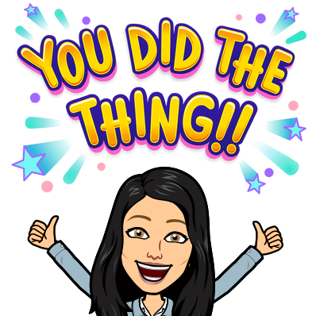

The World of Wine and … Data Science!
Imagine yourself walking into a wine shop, facing hundreds of bottles, each with a different label and price tag. How do you pick the right one? Most of us rely on our taste experience, or perhaps the recommendation of an expert, but what if there was a way to predict the quality of wine based on science, not just subjective opinions?
(copyright holder:RapidEye)
In the world of wine, quality is often assessed by experts, but there’s a problem: human taste can be inconsistent, and personal preferences can cloud judgment. Here’s where data science comes into the stage. By analyzing the measurable characteristics of wine, like acidity, alcohol content, and sugar levels, we can predict how good a bottle of wine will be.
In this blog, we’ll dive into how data science can predict wine quality using data-driven approaches and explore how you, as a wine lover, can benefit from this.
The Science of Wine
Core Hypothesis
Based on previous studies, we come up with an idea: The measurable properties like alcohol, sugar, and acidity etc. of wine have relationship with the quality score and can be used to predict its quality.
Is that the truth? What are these chemical and physical properties. We need some real wine data to analysis and test our hypothesis.
Data Source
We used the Wine Quality Dataset from the UCI Machine Learning Repository (Cortez 2009). This dataset contains both red and white wines of over 6,000 samples. Each sample includes 11 features like alcohol content, acidity, and pH, as well as a quality score ranging from 0 to 10. This dataset allows us to explore how the different features of wine correlate with quality scores.
While the dataset provides valuable insights, there are some things worth noting. The dataset is imbalanced. For example, there are more normal wines than excellent or poor ones, which is similar to real-life situations.
Important Variables
Wine quality is a complex subject, influenced by both chemical and sensory factors. The first step in our analysis is understanding what are the key components that affect a wine’s taste. According to previous studies, the dataset present 11 physicochemical variables.
- Alcohol: Generally, wines with higher alcohol content are considered to have a richer taste.
- Acidity(fixed acidity, volatile acidity, citric acid): Acidity levels influence the sharpness of a wine. A wine with too much acidity might taste sour, while low acidity can make it feel flat.
- Sugar(residual sugar): Residual sugar levels give wine its sweetness. Wines with higher sugar content often have a smoother, sweeter taste.
- pH: This measures how acidic or basic the wine is. A balanced pH is essential for preserving the wine’s freshness and taste.
- Chlorides: In white wines, chlorides play a crucial role in balancing the acidity, enhancing the overall taste profile.
These properties, along with others like Sulfur Compounds (Free Sulfur Dioxide, Total Sulfur Dioxide, Sulphates, work as preservative) and density, help define a wine. By using data science techniques, we can predict wine quality based on these physicochemical properties.
Exploratory Data Analysis (EDA): Unveiling the Secrets
Before jumping into machine learning, it’s essential to conduct some exploratory data analysis (EDA).
EDA use graphical aids such as graphs and tables to better understand the dataset and identify potential trends. Let’s look at some interesting findings from our analysis:
Higher Alcohol, Better Quality: We found that wines with higher alcohol content tend to receive higher quality scores. This makes sense—stronger, more complex wines are often rated more highly.
Lower Acidity, Better Taste: Higher-quality wines also tend to have lower volatile acidity (a key contributor to the sourness of wine). This is another indicator of quality, suggesting that smoother, less acidic wines are more desirable.
White Wines Outperform Reds: On average, white wines scored better than red wines. This might surprise some people, but the chemistry behind white wine tends to be less complex, resulting in higher average ratings.
Right-Skewed Data: Many features, like sulfur dioxide and residual sugar, showed a right-skewed distribution. This means that most of the data points clustered toward the lower end, with a few outliers at the higher end.
These findings provide valuable insights, but now we want to predict wine quality using a machine learning model.
Building the Model: Let’s Predict Wine Quality
To predict wine quality, we used a logistic regression model, which is a commonly used technique for classification tasks. Here’s how it works:
- Logistic Regression: This model helps us predict a categorical outcome—wine quality scores in this case—by analyzing the relationships between input features (like alcohol and acidity) and the output (quality score).
We also performed some key preprocessing steps before training the model:
- Standardization: We standardized the features to ensure that variables with different scales (like alcohol and pH) didn’t disproportionately affect the model.
- One-Hot Encoding: For categorical variables, such as wine color (red or white), we used one-hot encoding to convert them into binary variables (e.g., 1 for red wine, 0 for white wine).
Once the data was prepared, we trained our logistic regression model using cross-validation. This step helps us tune the model’s parameters and improve its performance.
Finally, time to test our model!

(copyright holder:MDS)
Model Results: How Well Did We Do?
After training the model, we tested it on a separate dataset to evaluate its performance. The model achieved an accuracy score of 54%, meaning it correctly predicted the wine quality 54% of the time.
While this accuracy might seem low, it’s important to note that predicting wine quality is a complex task. The 54% accuracy is an improvement over random guessing, and the model provided some useful insights about which features contribute to wine quality.
What We Learned: Insights and Future Directions
Even though the model’s accuracy isn’t perfect, we gained several key insights:
- Alcohol and Acidity Matter: Higher alcohol and lower acidity levels are important factors in determining wine quality.
- White Wines Are Better (on Average): White wines tended to have higher quality scores than red wines in this dataset.
- Room for Improvement: The model’s accuracy of 54% suggests there’s room for improvement. We could explore other models, such as decision trees or random forests, which might perform better for this type of problem.
Additionally, the presence of outliers in features like sulfur dioxide and residual sugar could be addressed by refining the data preprocessing steps. It would also be useful to explore additional data sources, such as information about the winemaking process or the region where the wine was produced.
Conclusion: What did we learn today?
In this blog post, we demonstrated how data science can help predict wine quality based on measurable physicochemical properties. By applying machine learning techniques, we were able to uncover relationships between wine features and quality scores, providing insights that can help both winemakers and consumers make more informed decisions.
While our model’s performance could be improved, this analysis provides a foundation for future research. By refining the model and incorporating expert knowledge, we can further improve predictions and contribute to the advancement of data-driven approaches in the wine industry.
So, next time you’re picking out a bottle of wine, you can rely not just on taste, but on science. Cheers to that!
Reference
Aich, Al-Absi, S. 2018. A Classification Approach with Different Feature Sets to Predict the Quality of Different Types of Wine Using Machine Learning Techniques. https://doi.org/10.23919/ICACT.2018.8323674.
Cortez, Cerdeira, P. 2009. Wine Quality [Dataset]. UCI Machine Learning Repository. https://doi.org/10.24432/C56S3T.
Jain, Kaushik, K. 2023. “Machine Learning-Based Predictive Modelling for the Enhancement of Wine Quality.” Scientific Reports 13 (17042). https://doi.org/10.1038/s41598-023-44111-9.
Kniazieva, Y. 2023, October 12. A Digital Sommelier: Machine Learning for Wine Quality Prediction. https://labelyourdata.com/articles/machine-learning-for-wine-quality-prediction.